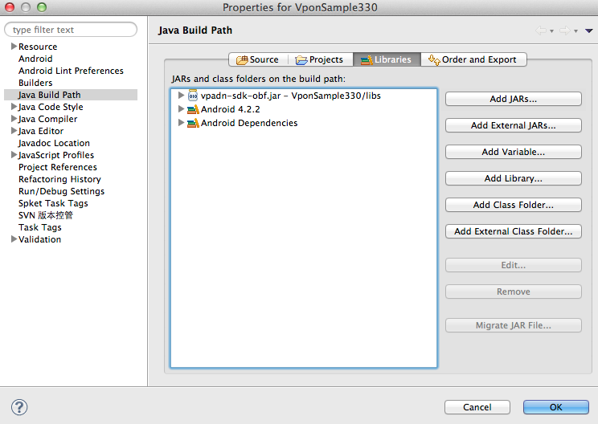

Vpon SDK 基本使用
若您曾使用過舊版SDK，請先閱讀: 升級最新 SDK 所需修改
請先從註冊網址檢查您的 Ad Network 平台:
Taiwan 平台為 http://tw.pub.vpon.com/
China 平台為 http://cn.pub.vpon.com/如果您申請的是 Taiwan 的平台，請使用：
vponBanner = new VpadnBanner(this, bannerId, VpadnAdSize.SMART_BANNER, “TW”);如果您申請的是 China 的平台，請使用：
vponBanner = new VpadnBanner(this, bannerId, VpadnAdSize.SMART_BANNER, “CN”);
概要
VPON 橫幅廣告 (banner) 利用畫面的一小部分來吸引使用者點擊，即可打開全螢幕享受更豐富的瀏覽體驗，例如網站或應用程式商店網頁。 若要在 Android 應用程式中顯示橫幅廣告，只要在您的 Eclipse 專案中導入 SDK，然後在使用者介面上加入 com.vpadn.ads.VpadnBanner 即可。
系統需求
VPON 廣告 Android 版的 SDK 需至少搭配 Android 2.1.X 或更新版本使用。請確認您所使用的是最新版的 Android SDK，並依據 Android v4.X 或更新版本進行編譯 (將 default.properties 中的 target 設為 android-17)。
導入 SDK
要在應用程式中加入 VPON 廣告，您必須完成三個步驟：
- 在 Eclipse 專案中加入 VPON SDK 4 JAR
- 在 AndroidManifest.xml 中宣告 com.vpadn.widget.VpadnActivity
- 在資訊清單中設定必要的 permissions。
Eclipse
在 Eclipse 中的應用程式專案上按一下滑鼠右鍵，並選擇
Properties。
選取
Java Build Path(Java 建構路徑) 和Libraries(程式庫) 分頁，然後按一下Add External JARs...(新增外部 JAR...)，加入 VPON 廣告 JAR。 
Android Studio
在 Android 中的應用程式專案找到
libs(途徑：project_name->app->libs)
滑鼠右鍵點選
libs後，左鍵點選 [Reveal in Finder]
將下載下來的 JAR 檔複製到
libs資料夾 (也可以直接拖移 Vpon JAR 至專案的libs)
回到 Android 專案，
libs會多出一個 Vpon 的 JAR 檔案，對它按下右鍵選則 [Add as library]。也請到 app 下的 build.gradle 確認，如範例顯示，將會有一行 compile files('libs/vpon_SDK_version_name.jar') 表示 JAR 被讀到了
VpadnActivity
加入以下設定在您的 AndroidManifest.xml
<activity
android:name="com.vpadn.widget.VpadnActivity"
android:configChanges="orientation|keyboardHidden|navigation|keyboard|screenLayout|uiMode|screenSize|smallestScreenSize"
android:theme="@android:style/Theme.Translucent"
android:hardwareAccelerated="true" >
</activity>
注意: 上面每一個屬性都不能少,其值都需要相同！
Permissions
加入以下 permission 在您的 AndroidManifest.xml
<uses-permission android:name="android.permission.INTERNET" />
<uses-permission android:name="android.permission.READ_PHONE_STATE"/>
<uses-permission android:name="android.permission.ACCESS_COARSE_LOCATION"/>
<uses-permission android:name="android.permission.WRITE_EXTERNAL_STORAGE" />
<uses-permission android:name="android.permission.ACCESS_WIFI_STATE" />
<uses-permission android:name="android.permission.ACCESS_NETWORK_STATE"/>
上面六個是必要的 permission，另外建議您可以開啟下面這個 permission，將可以更精準的定位取得地理位置相關的廣告
<uses-permission android:name="android.permission.ACCESS_FINE_LOCATION"/>
另外下面這個permission可以提高辨識使用者身分的能力，讓廣告能更精準的被投放，進而為您帶入更多的營收
<uses-permission android:name="android.permission.GET_ACCOUNTS"/>
由於Vpon SDK 4有大量的 Video 廣告，建議您在你放 Banner 的 Activity 內加入硬體加速，如下
<activity
android:name="com.vpadn.example.MainActivity"
android:label="@string/app_name"
android:configChanges="keyboardHidden|orientation"
android:hardwareAccelerated="true" >
<intent-filter>
<action android:name="android.intent.action.MAIN" />
<category android:name="android.intent.category.LAUNCHER" />
</intent-filter>
</activity>